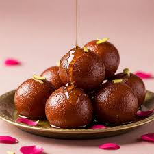

🤤 Gulab Jamun

Prep Time: 40 mins
Servings: 10-12 pieces
- 1 cup milk powder
- ¼ cup maida flour
- 1 tbsp rava
- ½ tsp baking powder
- ½ 2 tbsp ghee
- ¼ cup milk (adjust as needed)r
- Oil or ghee for deep frying
- 2 cups water
- 2-3 cardamom pods, crushed
- Few drops of rose water
⏳ Time Left: 45:00
- Mix milk powder, flour, rava, and baking powder.
- Add ghee and milk to form a smooth dough.
- Shape into small balls (avoid cracks).
- Deep fry in medium-hot oil until golden brown.
- In another pan, make sugar syrup with sugar, water, cardamom, and rose water.
- Soak fried gulab jamuns in warm syrup for at least 30 minutes before serving.